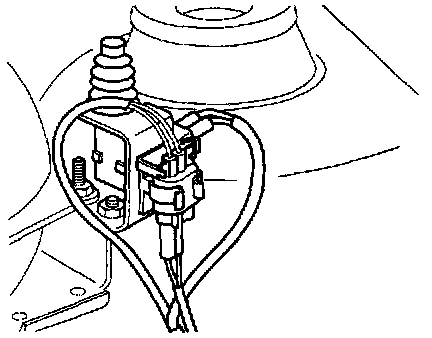

Hood Sensor/Switch (For Alarm): Service and Repair
Located left side of engine compartment, near shock tower. LocationsRemoval and Installation:

- Service Precautions
- Remove 2-pin connector from contact switch -F120-.
- Remove contact switch from mounting bracket.
- Install in reverse order of removal.
NOTE: The switch will only operate properly if it has been correctly installed. After repairs, recheck the installation if necessary